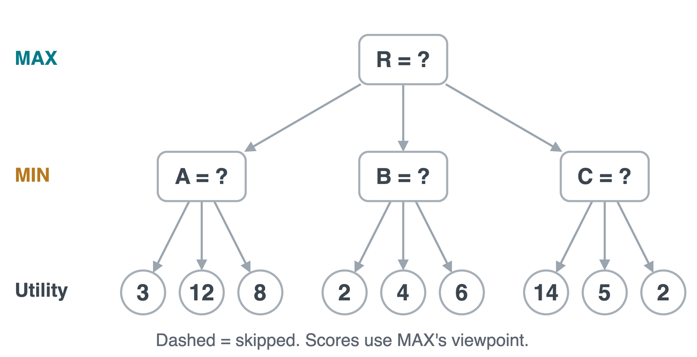
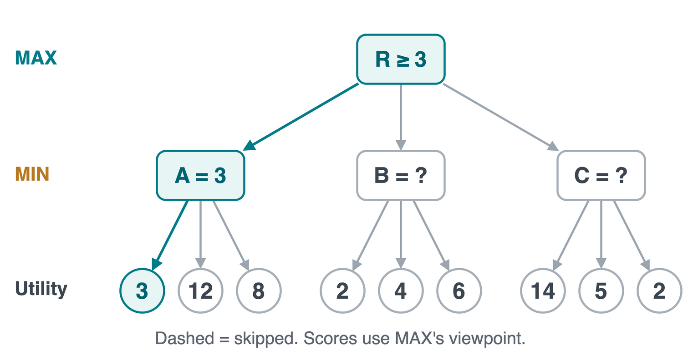
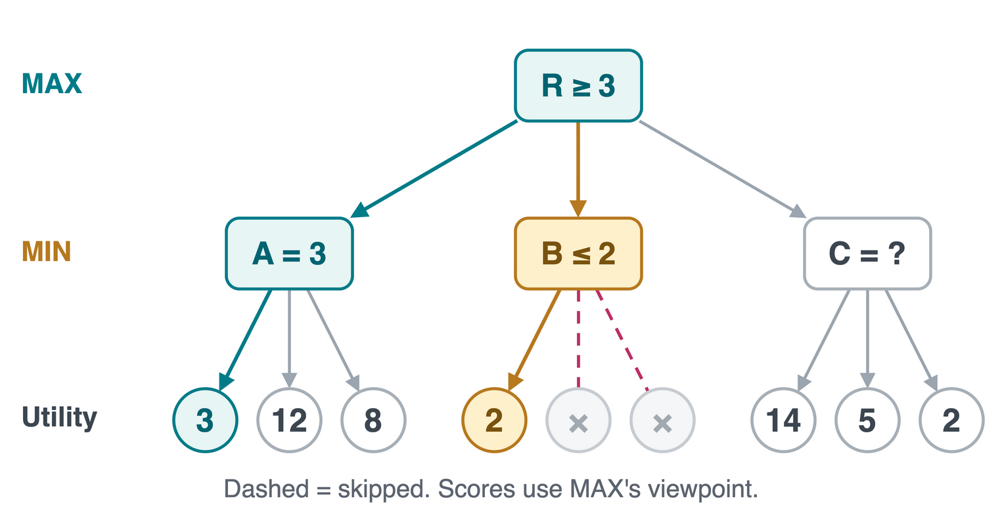
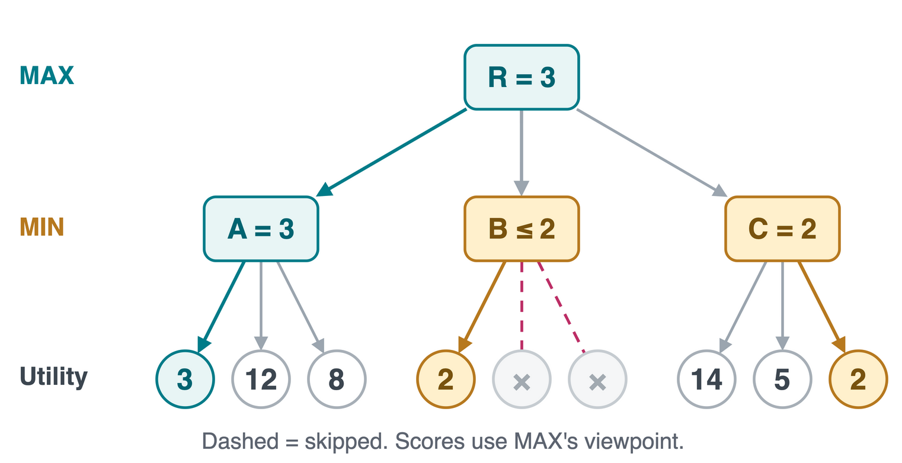
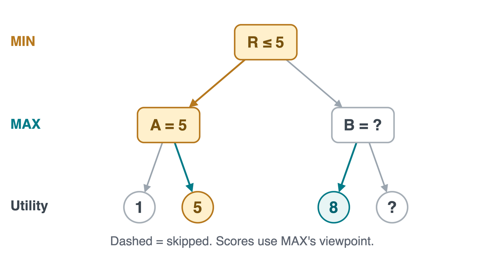
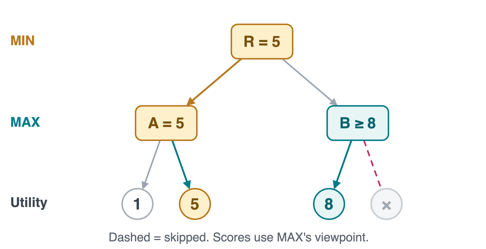
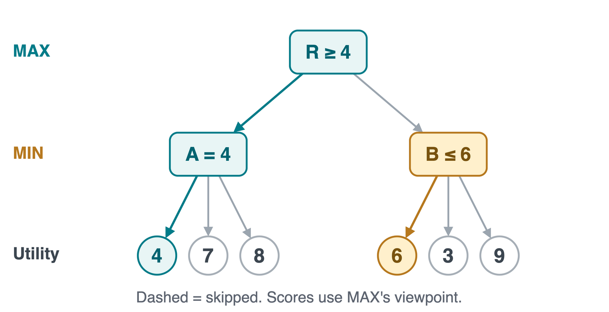
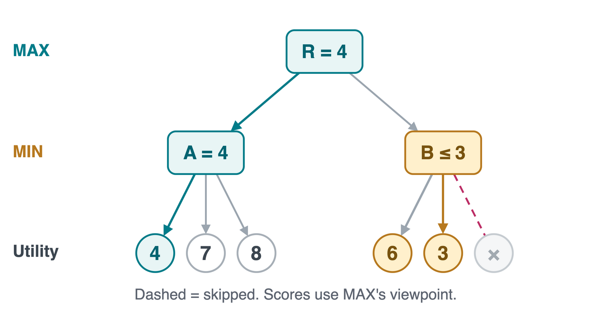

CS 463G & CS 663
(Intro to) AI
Lecture 10: Alpha-Beta Pruning
Fall 2026
Same Minimax Value, Less Search
Pruning means skipping unexplored branches once we can prove they cannot improve the root’s decision.

Minimax checked all 9 leaves. Can we establish the same root value, 3, with less work?
A Branch We Can Stop Searching
Search depth first, left to right. Leaf numbers are terminal scores, measured from MAX’s viewpoint.




At A: \min(3,12,8)=3. MAX already has an option worth 3.
At B: seeing 2 proves B\le2. Skip its remaining leaves: MAX can choose A.
At C: check 14, 5, then 2. Root value 3, move A, only 7 of 9 leaves evaluated.
Alpha and Beta: Options Already Available
- \alpha (alpha): MAX’s best lower bound so far along the search path.
- \beta (beta): MIN’s best upper bound so far along the search path.
- Start at the root with \alpha=-\infty, \beta=+\infty. Pass the current bounds to each child.
At B, MAX already has 3 elsewhere, so \alpha=3.
MIN finds a reply worth 2, lowering \beta to 2.
Prune when \alpha\ge\beta.
A cutoff can return a bound, not an exact subtree value. Here, knowing B\le2 is enough.
A Cutoff at a MAX Node
Now the root is MIN. It can already choose A for 5. At B, MAX discovers a child worth 8.


Could B’s remaining child make MAX’s choice smaller than 5?
No. B\ge8, but MIN can keep 5. At B, \alpha=8\ge\beta=5, so skip the remaining child.
Alpha-Beta Pseudocode: MAX
AB searches state s; a is a legal action. Start with AB(root, -infinity, +infinity). This is the MAX case.
AB(s, alpha, beta)
if TERMINAL(s): return UTILITY(s)
if PLAYER(s) == MAX:
v <- -infinity
for a in ACTIONS(s):
child <- RESULT(s, a)
v <- max(v, AB(child, alpha, beta))
alpha <- max(alpha, v)
if alpha >= beta: break
return v
MAX raises alpha. break skips the remaining actions at this node, then returns to the parent.
Alpha-Beta Pseudocode: MIN
The MIN case of the same function. RESULT(s, a) is the state reached by taking action a in state s.
AB(s, alpha, beta)
if TERMINAL(s): return UTILITY(s)
if PLAYER(s) == MIN:
v <- +infinity
for a in ACTIONS(s):
child <- RESULT(s, a)
v <- min(v, AB(child, alpha, beta))
beta <- min(beta, v)
if alpha >= beta: break
return v
MIN lowers beta. Both branches use the same stopping test: \alpha\ge\beta.
Quick Check: When Can We Stop?
MAX already has 4 from A. At MIN node B, the first leaf gives 6. Can we stop? What if the next leaf gives 3?


After 6, continue: 4<6. After 3, prune: \alpha=4\ge\beta=3. MAX keeps A, worth 4.
Move Ordering Changes the Work
Move ordering means trying promising moves first: high scores at MAX, low scores at MIN.
At C, try 2 before 14 and 5.
| Plain minimax |
9 |
| Original order |
7 |
| Better reply order |
5 |
With branching factor b and depth d, worst-case time is still O(b^d). Ideal ordering can reduce it to O(b^{d/2}).
Ordering changes which move we try first. Alpha-beta decides which remaining moves can safely be skipped.
A Depth Limit Changes the Leaf Scores
Let d count the remaining plies, where one ply is one player’s move. At a depth limit, the game may still be unfinished.
AB(s, d, alpha, beta)
if TERMINAL(s): return UTILITY(s)
if d == 0: return EVAL(s)
UTILITY(s): exact score of a finished game.EVAL(s): an estimate for an unfinished position, using the same player’s viewpoint.
With identical cutoffs and scores, alpha-beta matches depth-limited minimax. The heuristic estimate may still miss the best move in the full game.
Time Limits and Unstable Positions
Iterative deepening
Search depths 1, 2, 3, …. Keep the best move from the last completed search if time runs out. Its move ordering can help the next search.
Quiescence search
“Quiescent” means quiet or stable. Near a cutoff, extend selected forcing moves, such as a capture and immediate recapture, before evaluating.
Forward pruning skips moves because a heuristic judges them unpromising. Unlike alpha-beta’s bound test, it can change the minimax answer.
Takeaways
- Alpha-beta uses bounds to skip work while preserving the minimax root value.
- MAX raises \alpha; MIN lowers \beta. Stop remaining siblings when \alpha\ge\beta.
- Better move ordering can produce more pruning.
- A depth cutoff needs a heuristic estimate and a consistent score viewpoint.
For HW2, compare minimax and alpha-beta at the same depth. Keep the input board unchanged, and distinguish a forced pass from game over.
Demo: Alpha-beta notebook
Assignment: Homework 2: Reversi Agents
Asset credits